Barn Burning
The idea
Lee Chang-dong’s film Burning is loosely based on two short stories called “Barn Burning”, which had never been combined in one book.
What I did
I took inspiration from the film’s photography and its peculiar themes and style for the covers, while keeping the layout minimal and classic.
Making it
This was a 3-day personal project, where I designed the covers and layout, printed and hand-bound the book in my free time.
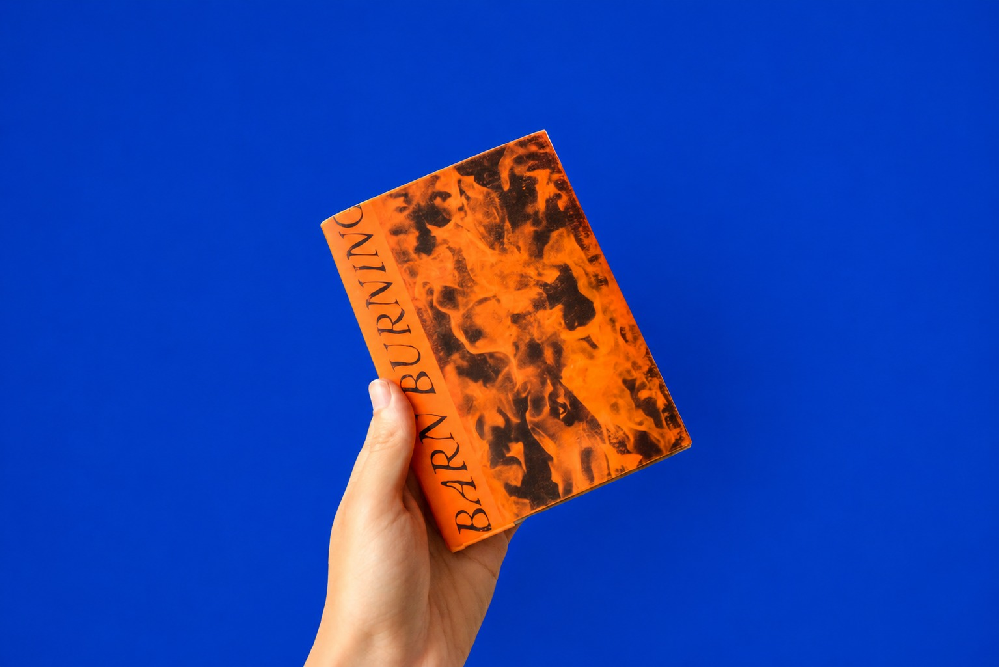
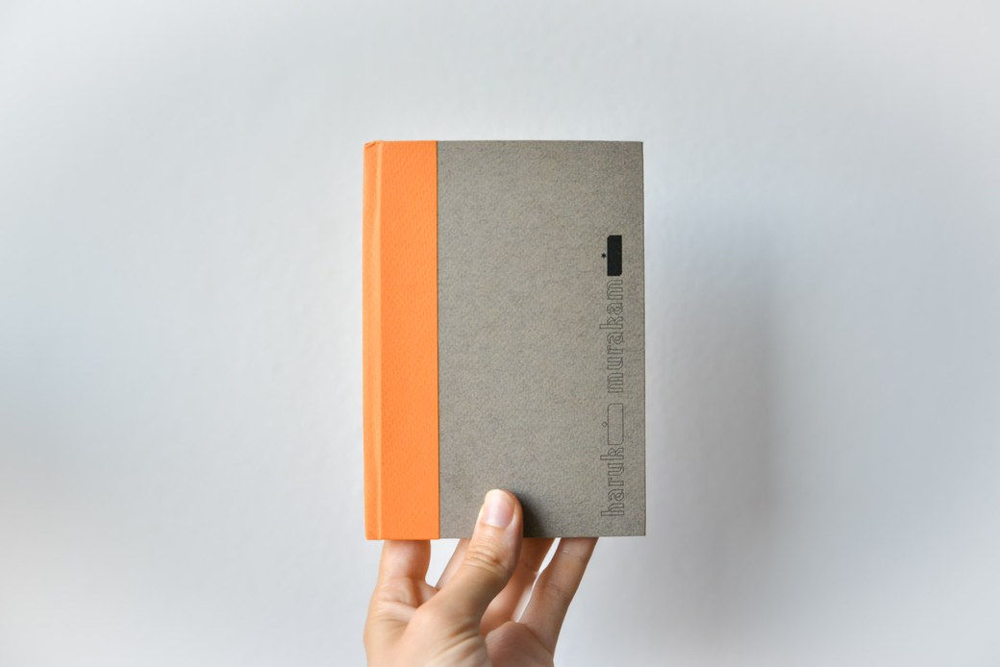
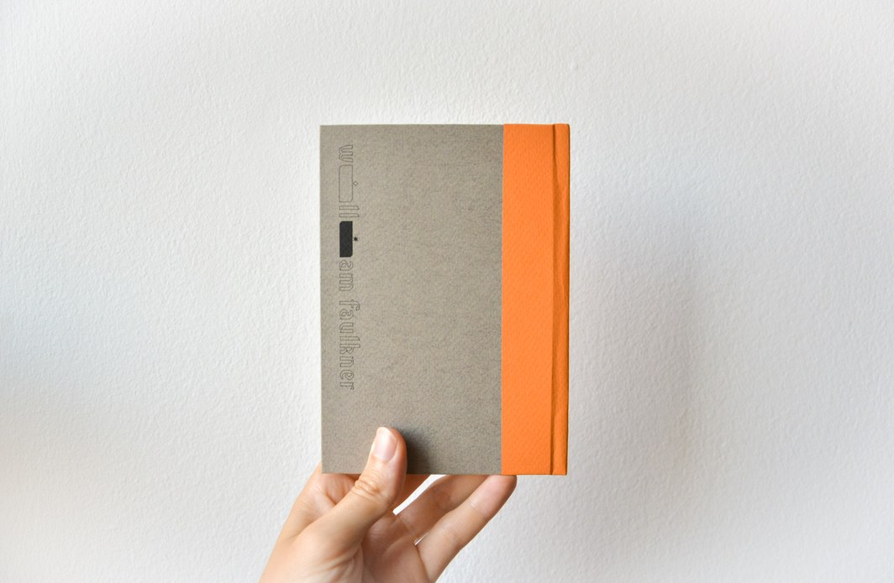
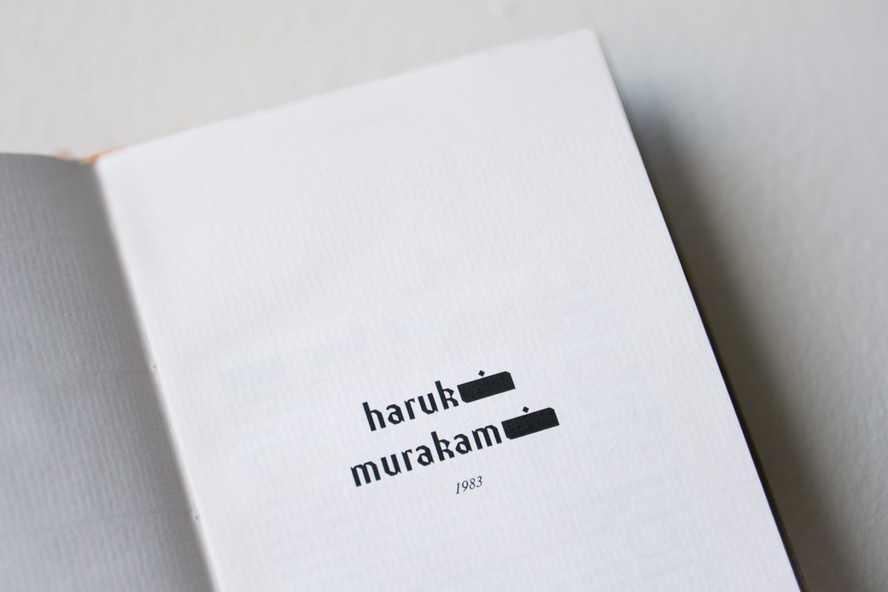
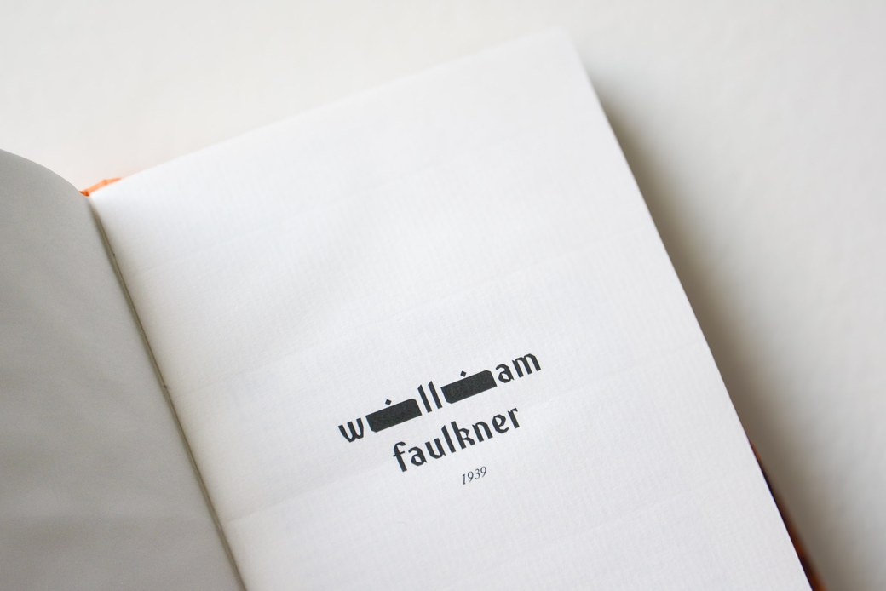
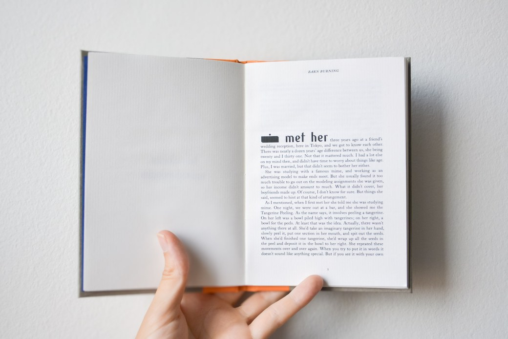
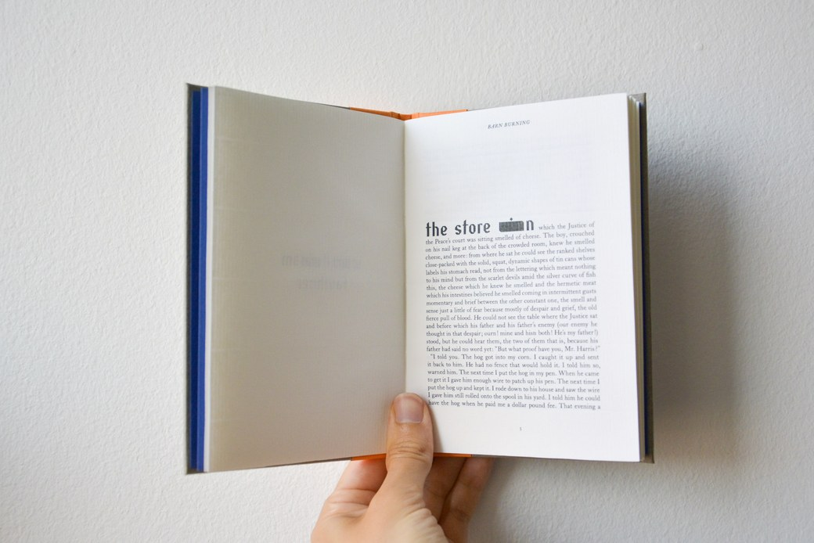
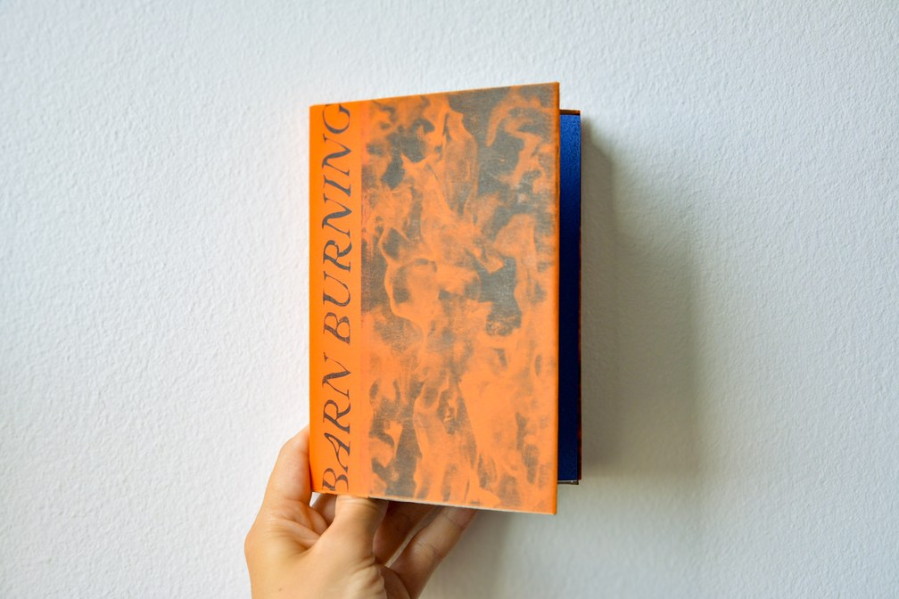
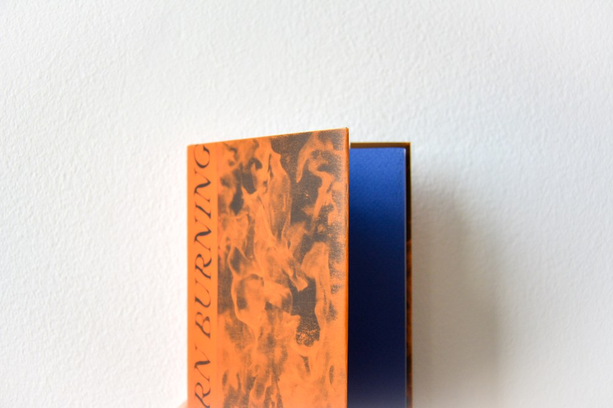
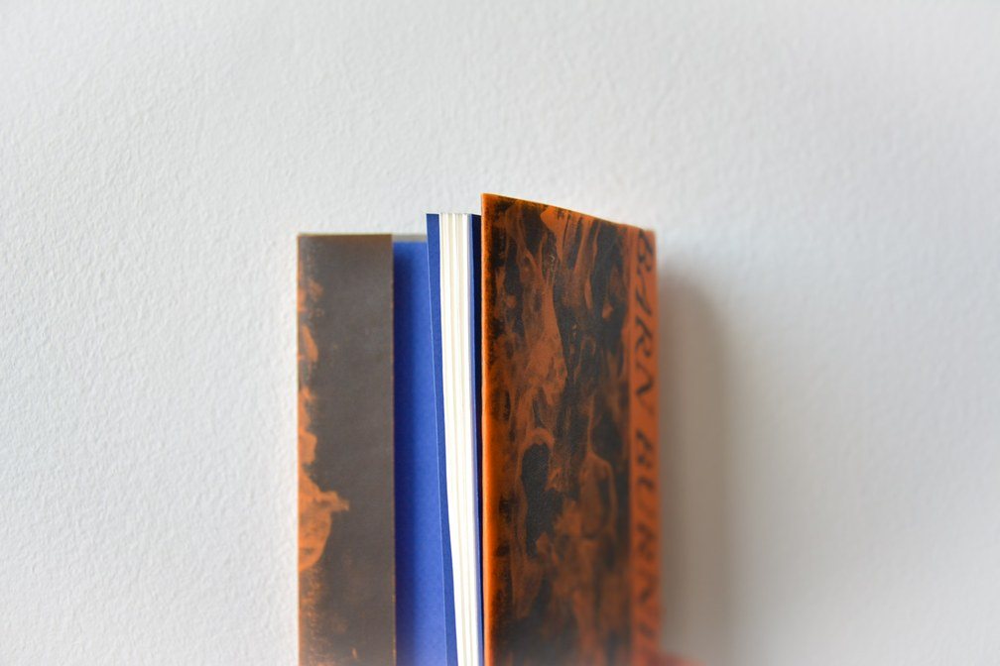
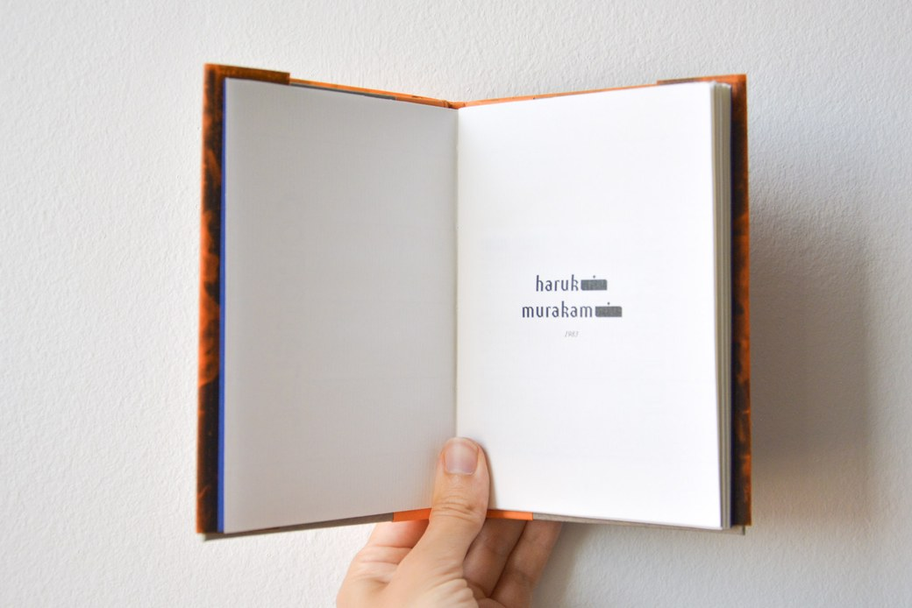
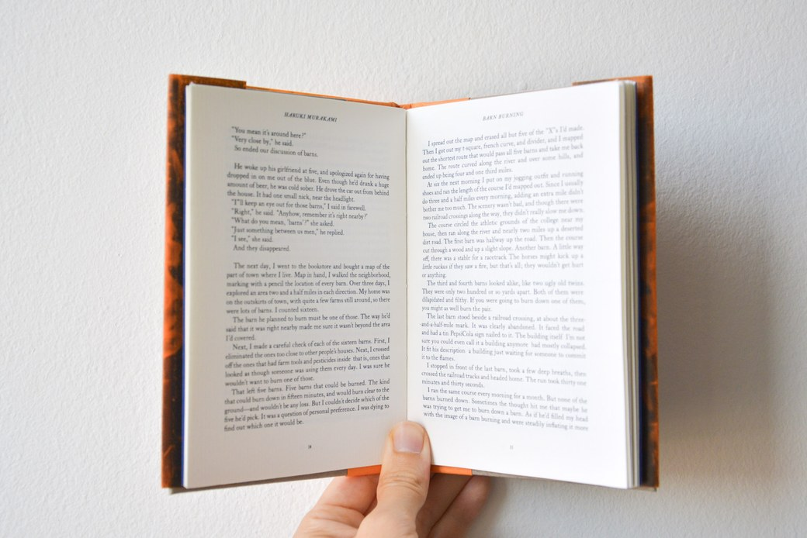